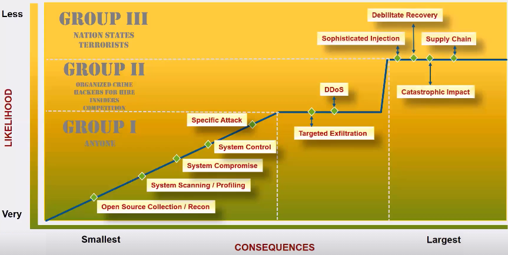
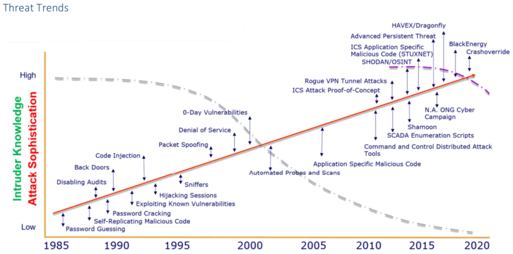

ICS risks and threats
Group 1 → Attacks that can be done by everyone, like script kiddies, The likelihood of these type of attack is very high but the consequences are not high
Group 2 → Attacks that can be done by: Organized crime, Hackers for hire, Insiders, Competition
Group 3 → Attacks that can be done by: Nation States, Terrorists. The Consequences can catastrophic because they have time, resources and money
The Dotted Gray line rappresent the knowledge of the attackers that in general is decreased because a lot of tools are publicly available online
The Red Line rappresent the how much the attacks are become sophisticated